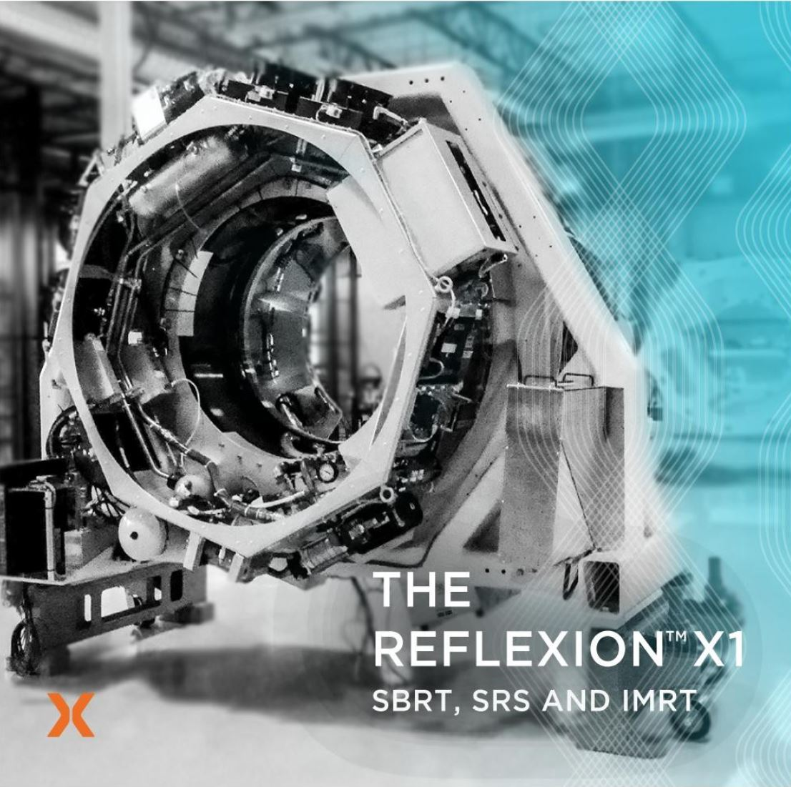

Professional Summary
I am an enthusiastic problem solver with a passion for new challenges and exploring/learning new technical skills. I have a strong understanding of robotics, fluids, thermal and mechanical design and analysis, with experience in leading design, test, equipment/component selection, hands-on builds, bring-up and troubleshooting.
Despite spending my entire career at RefleXion Medical, I have broad engineering experience. I have worked on designing thermal subsystems from the ground up, owning a 5-axis robotic subsystem, designing a 5-axis robotic fixture for manufacturing, writing PLC controls software, and developing image processing software tools for radiation film analysis.
I am deeply internally motivated to accomplish high-level goals, and I am able to make a plan of attack to get there. My broad experience comes from my relentless drive to complete high-level goals and my willingness to delve into any topic and learn new skills to reach the objectives.
Key Projects
Liquid & Air Cooling System
▼
Led the "full stack" development of the liquid and air cooling subsystems including mechanical design, component selection, electrical design, integrated software, requirements, testing, prototyping, and bring up.
Thermal Systems
CFD
PLC
Component Selection
Verification Testing
- Successfully led and completed the design, prototyping and testing effort to produce a reliable, serviceable, and manufacturable subsystem.
- Used analysis and CFD to develop thermal and fluid models of the system to inform design decisions and requirements.
- Developed all mechanical components of the subsystem including custom heat exchangers and heat plates, custom immersion heaters, weldments, riveted assemblies, sheet metal, injection molded, 3D printed and machined components.
- Selected and implemented all components including: inverters, PLCs, thermoelectric coolers, power supplies, BLDC motors, motor controllers, encoders, solenoid valves, pumps, power controllers, thermocouples and RTDS, pressure transducers, magnetic and vortex flow meters, linear position sensors, pneumatic cylinders, electronic pressure regulators.
- Engineered the electrical architecture and embedded PLC software for cooling system with a focus on predictive maintenance, enabling all components to report early warning signs of failure.
- Led the discussion with MV Beam generation, CAT/PET scan teams, Product Engineering and Systems Engineering teams to define the subsystem requirements and specification.
- Developed verification test strategy, test cases, test plan to ensure compliance with specifications.
5-Axis Robotic Treatment Couch
▼
As the subsystem lead/owner of the treatment couch, I oversaw all development related to the subsystem across hardware and software.
Robotics
Motion Control
Project Management
FMEA
Verification Testing
- Managed the 5-axis patient positioning robot subsystem as the lead project engineer and led targeted improvement initiatives that optimized hardware and software performance.
- Coordinated multi-company team to lead projects from initial concept to production, including the generation and management of specifications, FMEAs and verification tests.
- Led team to implement replacement motor controllers and PLC, upgrade optical string encoders and linear magnetic encoders under tight timeline to meet production goals.
- Conducted supplier site inspection to audit QA process of using a CMM for verification of 3D positional accuracy, identified flaw and helped develop a more robust process.
- Led weekly meetings with vendors to ensure timely completion of joint projects.
- Managed a cross functional team within the company to overcome critical component obsolescence issues and fix mechanical reliability issues.
PET Subsystem Redesign
▼
Led the mechanical design of the Positron Emission Tomography (PET) Subsystem, which is the core technology of RefleXion Medical that enables the real-time tumor tracking ability of the treatment device.
Patent Pending
Thermal Design
Modular Design
CFD
Systems Engineering
- Led the design of the mechanical architecture, and bi-weekly meetings to showcase progress to the directors of Mechanical Engineering, Systems Engineering and Radiation Sensing.
- Developed novel approach using a modular design (Patent Pending) which utilizes gamma radiation shielding as thermal conduction path to dissipate heat into liquid cooling.
- Designed cooling spline architecture to dissipate heat from each PET module and ASIC board.
- Incorporated space constrained packaging of PCBs, electrical and optical cables, including blind mate connection.
- Used CFD to model thermal, fluid and air flow to ensure tight temperature control.
- New design cuts service time down from 8 hours to about 30 minutes.
- New design has a 4 times wider field of view axially while maintaining the same form factor.
System & LINAC Alignment Tools
▼
Developed a 5-axis opto-mechanical fixture and process for physically aligning the treatment couch motion axes to the axis of rotation of the treatment device, and developed software tools to improve beam alignment.
Optical Systems
MATLAB
Image Processing
C#
Manufacturing Processes
- Developed a 5-axis optomechanical fixture utilizing a laser to determine the axis of rotation of the machine and align the treatment couch to the machine within micron accuracy.
- Completed mechanical design, software (C#), manufacturing procedure and validation procedure and design transfer to production.
- Conducted research to characterize the relationship between inputs (linear accelerator position, collimator positions) and beam characteristic outputs.
- Utilized research results to develop a cost function to streamline and automate the linear accelerator alignment process, resulting in an 8x reduction in manufacturing time.
- Developed several image processing tools using MATLAB to verify beam quality including custom algorithm to detect spheres using a paraboloid regression.
- Developed system alignment process to align the rotating gantry with the treatment couch and the room lasers used for patient setup.
Water Distribution & Cable Management
▼
Designed water manifold to distribute water and control and measure flow in a tightly constrained space. Developed hose and cable routing provisions to optimize assembly and service time.
Fluid Systems
Manufacturing
Serviceability
System Integration
- Engineered water distribution manifold with compensation for differential pressure to ensure steady flow rates resulting in better downstream cooling performance.
- Worked with the electrical team to realize a cable management scheme to improve manufacturing time and service time of electrical cables.
- Designed water distribution manifolds with pressure compensation and optimized hose/cable routing for improved assembly and serviceability.
- Designed the system to completely purge itself of water then re-fill automatically.
- Designed a distribution manifold with active feedback to control the outlet temperature of the various liquid cooled components by varying flow rates.
The RefleXion X1 System
The RefleXion X1 is a revolutionary radiation therapy device that combines Positron Emission Tomography (PET) with a Linear Accelerator (LINAC) to deliver radiation that targets cancer's motion.

My Contribution
As a key engineer on the RefleXion team, I've led the development of multiple critical subsystems:
- Designed and implemented the liquid and air cooling systems
- Led the 5-axis patient positioning robot subsystem
- Developed the mechanical architecture for the PET subsystem
- Created alignment systems and software tools for manufacturing and calibration
The RefleXion X1 represents a significant advancement in cancer treatment technology, and I'm proud to have contributed to its development.